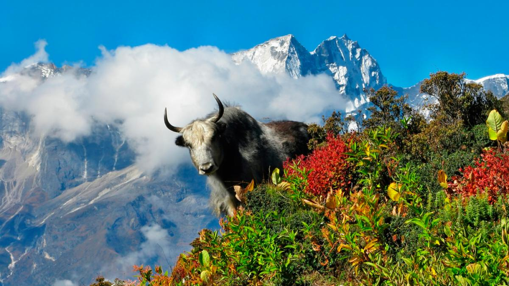

Cordillera de los Andes
Ubicada en América del Sur, es la cadena montañosa más larga del mundo. Atraviesa siete países y cuenta con paisajes únicos.

Explora las maravillas naturales de las montañas más impresionantes.
Ubicada en América del Sur, es la cadena montañosa más larga del mundo. Atraviesa siete países y cuenta con paisajes únicos.
En Asia, el Himalaya es hogar del Monte Everest, la montaña más alta del mundo, y un destino para aventureros de todo el planeta.
Senderismo, escalada, exploración de glaciares y experiencias culturales únicas en las comunidades andinas.

Una experiencia inolvidable incluye rutas de trekking, monasterios budistas y vistas impresionantes del Everest.